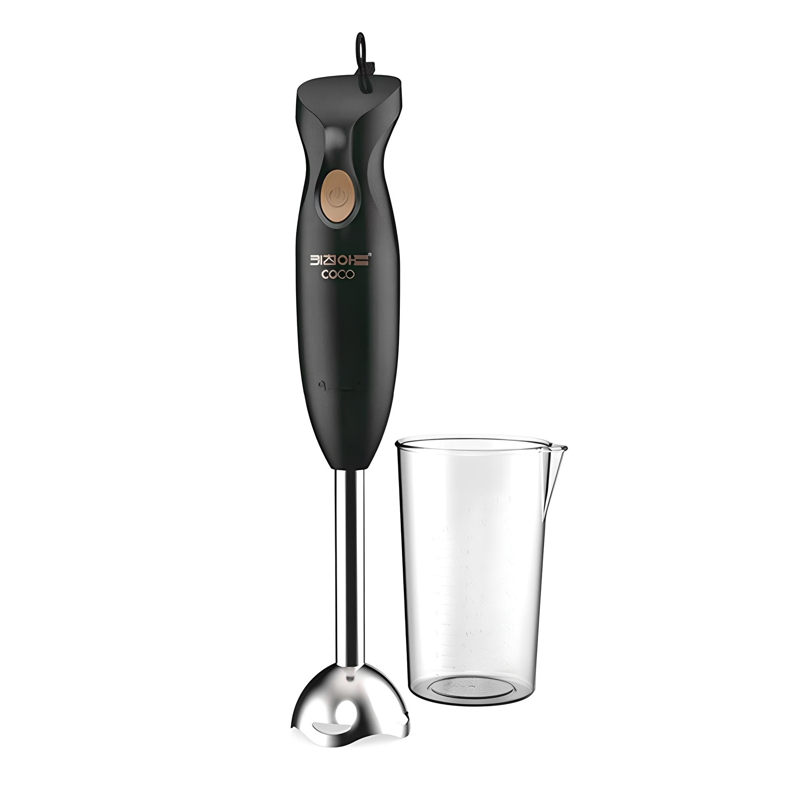
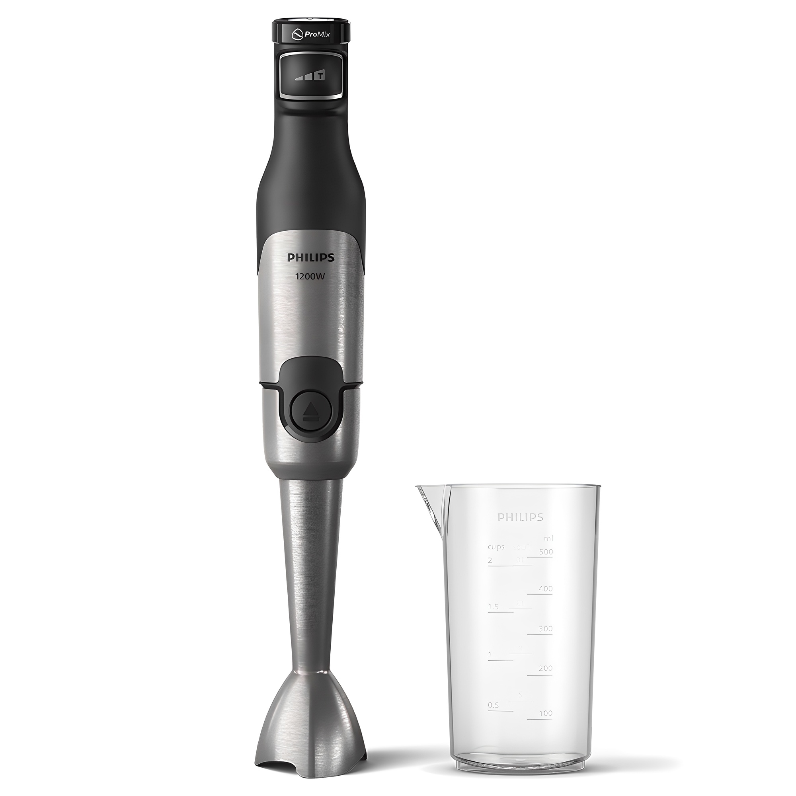
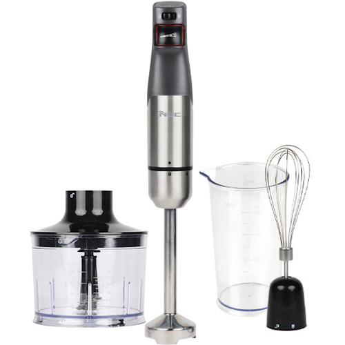

홈 › 제품리뷰 › 주방/조리
핸드블렌더, 이유식 가성비냐 다용도 세트냐
작성: 생활서식 모음 · 2026-07-22
파트너스 활동의 일환으로 일정액의 수수료를 지급받습니다
🛒 오늘의 쿠팡 특가 보러가기 →
핸드블렌더(도깨비방망이), 뭘 살지 고민되죠?
핵심은 "출력과 부속(다용도), 소음" 3대 를
"이유식·가볍게" "브랜드 파워" "다지기·거품까지"용도별 정답 까지 담았으니
📋 목차
핸드블렌더, 이유식 가성비냐 다용도 세트냐 — 결론 먼저 스펙 비교표: 한눈에 보기 핸드블렌더 고를 때 봐야 할 4가지 이유식이냐 다용도냐, 뭘 사야 할까? 자주 묻는 질문 (FAQ) 결론: 한 줄 요약
핸드블렌더, 이유식 가성비냐 다용도 세트냐 — 결론 먼저
핸드블렌더는 "출력과 부속 구성" 으로 갈려요.필립스 파워 5000 이 무난합니다. 이유식·가볍게면 가성비로 충분하고, 다지기·거품내기까지 다양하게면 부속이 많은 다용도 세트입니다.
1 이유식·입문 (가성비 초이스)
가성비

2만원대 가성비
1. 키친아트 코코 핸드블렌더
2만원대 핸드블렌더 이유식·소스 갈기 가볍게 입문용
고출력은 아니어도
추천 대상
이유식·소스 등 부드러운 재료를 가는 분 저렴하게 핸드블렌더를 시작할 분 가볍게 다용도로 쓰려는 분 장점
2만원대로 부담 없이 핸드블렌더를 마련 이유식·수프·소스 등 부드러운 재료 갈기에 충분 가볍고 단순해 쓰기 쉬움 단점
출력·부속이 제한적이라 단단한 재료·다지기·거품은 아쉬움 이 제품은 이유식·입문용 입니다. 브랜드 파워면 2번, 다지기·거품까지면 3번 다용도 세트로 가세요. "이유식·가볍게"면 가성비 최고예요.
한줄 리뷰
"이유식·소스 정도"면 2만원대로 충분합니다. 가볍고 세척도 간단해요. 단단한 재료·다지기·거품이면 2·3번을 보세요.
주요 스펙
제품: 키친아트 코코 핸드블렌더 급: 가성비·입문 용도: 이유식·소스·수프 배송: 로켓배송 가격: 약 19,800원 (변동 가능) ※ 실제 스펙·가격과 차이가 있을 수 있습니다
2 브랜드 파워 (베스트 초이스)
베스트

필립스 파워
2. 필립스 파워 핸드블렌더 5000
필립스 브랜드 파워 단단한 재료도 무난 메탈 내구
브랜드 파워로 든든하게
추천 대상
출력·브랜드 신뢰를 중시하는 분 단단한 재료도 갈고 싶은 분 오래 믿고 쓸 제품을 원하는 분 장점
필립스 파워로 단단한 재료도 무난하게 갈아냄 메탈 소재라 내구·완성도가 좋음 브랜드 A/S·접근성이 안정적 단점
다지기·거품 등 다양한 부속은 3번 세트가 더 풍부 이유식·가볍게면 1번, 다지기·거품까지면 3번 세트입니다. 2번은 "브랜드 파워+내구" 의 실속 구간 — 든든하게 쓰기 무난합니다.
한줄 리뷰
"이왕이면 브랜드로 힘 있게"면 필립스 파워가 든든합니다. 단단한 것도 잘 갈려요. 다지기·거품 등 다양한 부속이 필요하면 3번을 보세요.
주요 스펙
제품: 필립스 파워 핸드블렌더 5000 (블랙 메탈) 강점: 파워 · 메탈 내구 · 브랜드 용도: 다용도(단단한 재료 포함) 배송: 로켓배송 가격: 약 68,890원 (변동 가능) ※ 실제 스펙·가격과 차이가 있을 수 있습니다
3 다지기·거품 (프리미엄)
프리미엄

다용도 세트
3. 엔유씨 핸드블렌더 HANDY 1000
다지기·거품기 등 부속 고출력 다용도 요리 폭 넓힘
갈기·다지기·거품내기까지
추천 대상
다지기·거품내기 등 다양하게 쓰는 분 요리 폭을 넓히고 싶은 분 고출력 다용도를 원하는 분 장점
다지기·거품기 등 부속으로 요리 활용도가 넓음 고출력이라 단단한 재료·많은 양도 무난 갈기 외 다지기·거품내기까지 하나로 해결 단점
부속이 많아 보관 공간이 필요하고 가격이 있음 이유식·가볍게면 1번, 브랜드 파워만이면 2번이 합리적입니다. 3번은 다지기·거품 등 다양한 요리 를 원하는 분에게 값어치가 있습니다.
한줄 리뷰
"갈기만이 아니라 다지기·거품까지"면 부속 많은 세트가 알찹니다. 요리 폭이 넓어져요. 이유식·가성비면 1·2번이 합리적입니다.
주요 스펙
제품: 엔유씨 핸드블렌더 HANDY 1000 (NHB-200K) 구성: 다지기·거품기 등 부속 · 고출력 용도: 갈기·다지기·거품 배송: 로켓배송 가격: 약 79,000원 (변동 가능) ※ 실제 스펙·가격과 차이가 있을 수 있습니다
스펙 비교표: 한눈에 보기
가격·풍량·무게 중 본인에게 중요한 기준부터 보세요. "최고" 표시는 3제품 중 객관적 1위 값입니다.
← 좌우로 스크롤 →
핸드블렌더 고를 때 봐야 할 4가지
출력·부속만 챙겨도 "덩어리·못 하는 요리" 실패를 막습니다.
1) 출력(W) — 재료 단단함
부드러운 이유식·수프는 저출력도 충분 단단한 재료·얼음·많은 양은 고출력이 유리 출력이 낮으면 덩어리가 남거나 모터에 무리 2) 부속 — 갈기만? 다지기·거품까지?
기본: 블렌딩(갈기) 위주다지기(초퍼): 마늘·양파 다지기거품기(휘퍼): 계란·크림 거품내기3) 소음 — 이유식·아이
핸드블렌더는 소음이 있는 편 — 저소음 표기 확인 아이가 있으면 소음이 적은 시간·제품 고려 속도 조절이 되면 상황에 맞게 4) 세척·재질 — 위생
블렌딩봉(닿는 부분)이 분리·물세척 되는지 메탈봉은 위생·내구에 유리 식기세척기 사용 가능 여부도 확인 이유식이냐 다용도냐, 뭘 사야 할까?
만들 요리와 부속 필요만 정하면 답이 나옵니다.
이유식·가볍게: 1번 키친아트 코코 → 2만원대브랜드 파워: 2번 필립스 5000 → 든든다지기·거품까지: 3번 엔유씨 HANDY → 다용도자주 묻는 질문 (FAQ)
Q1. 핸드블렌더랑 믹서기, 뭐가 다른가요? 형태와 용도가 다릅니다. 믹서기는 통에 재료를 넣고 갈아 주스·스무디처럼 많은 양을 만들기 좋습니다. 핸드블렌더는 봉을 냄비·컵에 직접 넣어 갈기 때문에 이유식·수프·소스처럼 조리 중 바로 갈거나 소량을 처리하기 편합니다. 옮겨 담을 필요 없이 냄비에서 바로 갈 수 있어 이유식·수프에 특히 편리합니다.
Q2. 이유식용으로는 어떤 핸드블렌더가 좋나요? 부드러운 재료를 곱게 가는 용도라 저출력 가성비로도 충분합니다. 이유식은 익힌 채소·고기 등 부드러운 재료가 많아 강한 출력이 필수는 아닙니다. 다만 곱게 갈리는 성능과 세척 편의(봉 분리·물세척)가 중요합니다. 아이가 자는 시간에 만든다면 소음이 적은 제품이 좋고, 초기 이유식은 완전히 곱게 갈리는지 확인하세요.
Q3. 얼음이나 단단한 재료도 갈 수 있나요? 고출력 제품이라야 무난합니다. 저출력 핸드블렌더로 얼음·단단한 재료를 갈면 덩어리가 남거나 모터에 무리가 갈 수 있습니다. 단단한 재료를 자주 갈 계획이면 출력이 높은 제품(필립스 파워·고출력 세트 등)을 고르세요. 다만 대량의 얼음 분쇄는 핸드블렌더보다 전용 믹서기가 더 적합합니다.
Q4. 부속(다지기·거품기)이 많으면 좋은가요? 다양한 요리를 하면 유용합니다. 다지기(초퍼)는 마늘·양파를 다지고, 거품기(휘퍼)는 계란·크림을 거품내는 등 부속이 있으면 하나로 여러 조리도구를 대신합니다. 다만 부속이 많으면 보관 공간이 필요하고 가격이 올라갑니다. 갈기만 주로 쓰면 기본형, 다지기·거품까지 자주 쓰면 부속 세트가 값어치가 있습니다.
Q5. 핸드블렌더 세척은 어떻게 하나요? 블렌딩봉(재료에 닿는 부분)이 분리되는 제품은 봉만 물에 씻으면 돼 간편합니다. 사용 직후 물에 담가 몇 번 돌리면 대부분 씻기고, 이후 봉을 분리해 세척합니다. 모터가 있는 손잡이 부분은 물에 넣으면 안 되니 닦아냅니다. 메탈봉은 위생·내구에 유리하고, 식기세척기 사용 가능 여부는 제품마다 다르니 확인하세요.
결론: 한 줄 요약
1) 키친아트 코코 — 약 19,800원 / 이유식·입문. 2만원대, 이유식·소스 갈기.2) 필립스 파워 5000 — 약 68,890원 / 브랜드 파워. 단단한 재료도 든든.3) 엔유씨 HANDY 1000 — 약 79,000원 / 다지기·거품. 부속으로 다양하게.이 포스팅은 쿠팡 파트너스 활동의 일환으로, 이에 따른 일정액의 수수료를 제공받습니다.